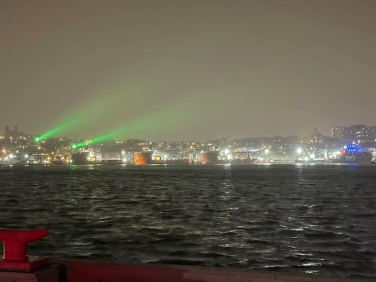

St. John’s Harbour Range Lights Modernization
Supported the modernization of harbour range lights to improve marine safety, transitioning incandescent lighting to LED technology and implementing a remote-control system to manage brightness in real time.

Project Overview
Supported the modernization of the St. John's harbour range lights to improve marine safety in low-visibility conditions. The project involved transitioning incandescent lighting to high-efficiency LED technology and implementing a remote-control system so ships can manage range light brightness in real time.
The Problem
After upgrading to LED range lights, an operational issue emerged:
- High intensity LEDs created excessive glare during clear conditions
- High intensity was required during fog for sufficient visibility
- Manual control from shore was impractical
- Solution had to be reliable in harsh marine environments
My Contributions
- Evaluated lighting performance and operational requirements
- Reviewed design standards and visibility criteria
- Assessed alternative solutions (including automated fog detection) which were ruled out due to reliability concerns and integration complexity
- Coordinated with suppliers to implement a VHF radio-controlled system to easily switch between light intensities
- Supported installation, site oversight, and contractor coordination
- Identified and integrated surge protection and reliability improvements
- Contributed to operational guidance documentation for mariners, with a project management focus on stakeholder coordination, risk mitigation, contractor oversight, and system reliability
Final Outcome / Impact
- Implemented a VHF-controlled dual-intensity lighting system
- Improved vessel navigation safety in varying visibility conditions
- Reduced maintenance and improved energy efficiency
- Delivered a scalable solution for future Aids to Navigation upgrades
Key Skills Applied
- Project coordination & stakeholder alignment
- Contractor communication & oversight
- Risk assessment & mitigation
- Troubleshooting & reliability improvement
- Field support & implementation monitoring
- Technical documentation & reporting